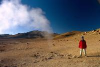
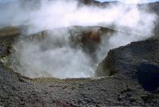
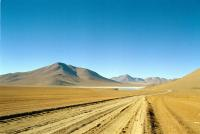
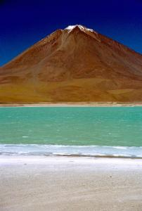

|
Mardi 2 octobre
Lever 5H30. Ce matin, on voit les geysers. De la fumée, un bruit terrible,
un vent glacial, on y est. On se croirait à côté d'une cocotte-minute dont le
bruit serait amplifié 100 fois. On doit crier pour s'entendre! Bouillonnement,
odeur de soufre, multiples cratères fumants et bouillonnants, trous fumants
partout dans le sol, ça fiche la trouille! Puis on dévale un désert de pierres
à fond vers la laguna Salada. Sur notre droite, une magnifique montagne dont
les tons s'étendent de l'ocre foncé-brun au très clair-crème en passant par
toutes les couleurs intermédiaires.
En juillet, il y a 20 cm de neige à la laguna Salada. En ce moment, on peut
se baigner! C'est qu'il y a une source d'eau chaude à environ 30 degrés. Les
baigneurs côtoient donc la glace qui est assez épaisse 5 mètres plus loin. C'est
un endroit très reposant. Cinq minutes plus loin, on atterrit à Las Rocas de
Salvadore Dali. C'est vrai qu'on se croirait dans un de ses tableaux. C'est
très dénudé. Un désert plat remontant en pente douce, fait de gravillons ou
sablñe très grossier dans des tons oranges à bruns et au milieu duquel s'élèvent
des rochers aux formes bizarroïdes semés ça et là. Autour, des montagnes aux
couleurs superbes, notemment celle-ci dans les tons pastels. On dirait un sablier
géant avec plein de coulées de sable de différentes couleurs se déversant et
s'étalant à nos pieds en une énorme mare orangée.
A nouveau des montagnes qui se désagrègent, se transformant en gigantesque
tas de cailloux. Un peu partout d'énormes roches qui semblent s'être détachées
de la montagne et avoir roulé sur son flanc régulier jusqu'à nous. D'un désert
de roches, on passe brutalement à un désert de sable brun puis jaune puis gris!
Toutes les transitions sont brutales. Et on arrive à la Laguna Blanca, blanche
comme son nom l'indique. Derrière, on peut voir (si on sait où regarder) l'Argentine,
le Chili et... la Bolivie se toucher. Comme quoi les trois frontières, ce n'est
pas qu'à Thionville. Une simple bande de sable sépare la Laguna Blanca de la
Laguna Verde, verte bien entendu et, chose quasi unique par ici, sans flamants.
Elle est trop profonde pour eux. Derrière s'élève le volcan Licancabur au cratère
dentelé de neige. On laisse les suisses qui continuent vers le Chili.
On repasse près de la Laguna Colorada qui donne alors la pleine mesure de ses
tons rouges. Surprenante étendue d'eau rouge. Recouverte de flamants. On pique-nique
à côté pour mieux en profiter. Puis la piste devient très très rude et ça ne
fait pas de bien du tout à la tourista. En plus il n'y a pas d'arbres, juste
des buissons de 50 cm de haut... Quelques ruisseaux plus loin, on arrive à la
Valle de las Rocas. Là, se dressent d'immenses rochers aux formes incroyables.
Là deux têtes qui se parlent, ici un monstre au groin de cochon. Et on dort
à Alota, village dont l'atmosphère poussiéreuse et les ombres allongées par
le soleil couchant font qu'on s'attend à ce qu'à tout instant éclate un duel
de cow-boys. Geneviève a peur d'avoir froid alors elle se fait un nid avec 5
ou 6 couvertures en plus de ses pulls et de son écharpe. Bref on ne la voit
plus!
Mercredi 3 octobre
On croise des troupeaux de lamas, de moutons et quelques chèvres avec leurs
bergères aux innombrables jupons et au crâne surmonté d'un chapeau. De temps
en temps dans cette immensité déserte, une ou deux maisons en briques et toit
de paille sont perdues. Des bergers habitent là. On passe par san Cristobal,
village entièrement neuf sauf l'église dont les cloches sont attachées avec
des lanières en peau de lama. En fait, se village se construit pour l'exploitation
de nouvelles mines d'or et d'argent appartenant aux USA! On papote un peu avec
les écoliers et leur maître. Ça interrompt leur cours mais tant pis. L'instit
est en train de faire un cours d'anglais et enseigne à ses élèves les 3 mots
qu'il semble connaître...
A midi on déjeune à Vila-Vila où les gamins s'éclatent avec les ballons de
baudruches offerts par Geneviève et Joël. Quand ça explose, les petits ouvrent
de grands yeux. Comme dit Geneviève, c'est éphémère, c'est bien comme ça. Geneviève,
la même qui vient de réparer définitivement -pour ce voyage du moins- ses lunettes
avec du scotch et le baton de sa sucette... très design...
Puis, on se rapproche du salaar et on se retrouve à nouveau la tête dans les
mirages. D'incroyables mirages qui font disparaître de grosses montagnes les
transformant en lacs!
Et enfin, dernier spectacle, le cimetière des trains. Plein de vieilles locos
et de wagons attendent là depuis 1950. Ils appartenaient à une entreprise privée
qui transportait des minéraux au Chili. Aujourd´hui c'est fini, il ne reste
que deux trains par semaine pour le Chili, résérvés aux passagers. Tous ces
vieux trains dans le désert, c'est très chouette à voir. Comme on n'a pas été
assez secoué, on prend le bus de nuit pour La Paz. Départ 20H00. Les joints
des portes sont mauvais et on baigne dans un épais brouillard de poussière!
Bonne nuit...
Suite du voyage : Arrivée à La Paz
|

Bolivie
Salaar Uyuni a deux bales
Sol de manana
|

Bolivie
Salaar Uyuni
Sol de manana
|

Bolivie
Salaar Uyuni
Agua Minerale
|

Bolivie
Salaar Uyuni
Laguna verde
|
|
|